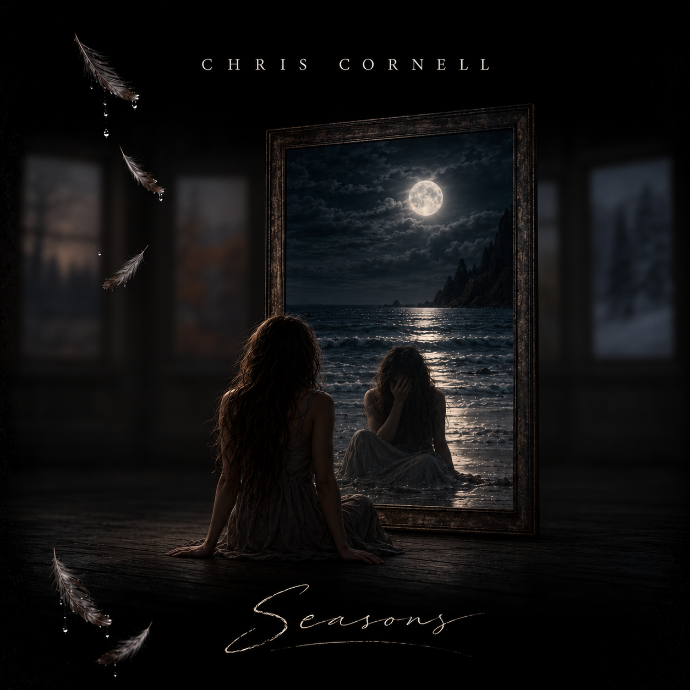
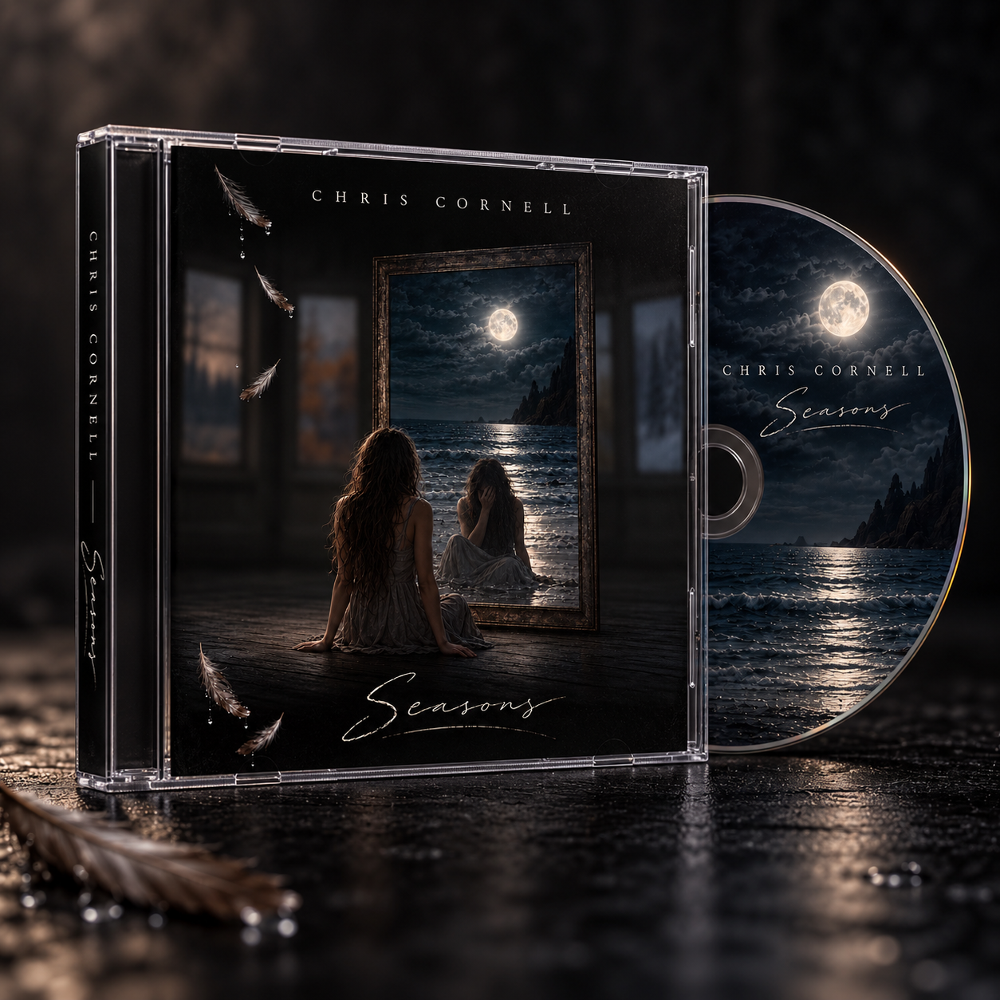
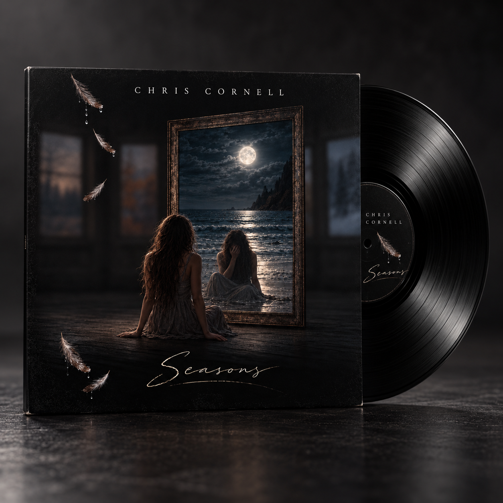

Visual storytelling · AI-assisted iteration
Album Art —
Seasons of Solitude
Inspired by Chris Cornell's song Seasons, this album-cover concept translates themes of isolation, reflection, and the passage of time into a visual composition. A solitary figure, seasonal imagery, falling feathers, and a moonlit reflection create a surreal environment that explores emotional distance and introspection.
Developed through an iterative AI-assisted design process, the artwork examines how artificial intelligence can support visual storytelling, conceptual exploration, and creative refinement.

Format studies
The image beyond the cover

